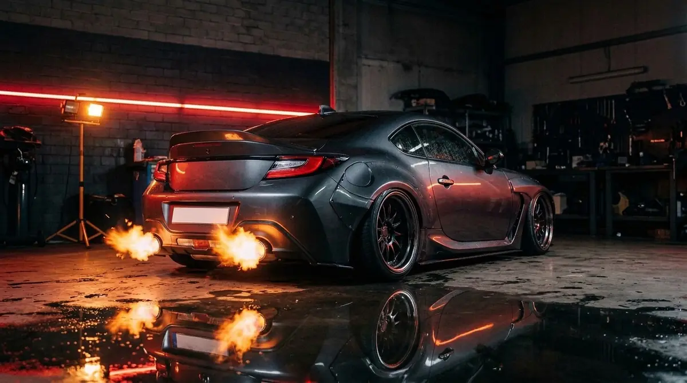
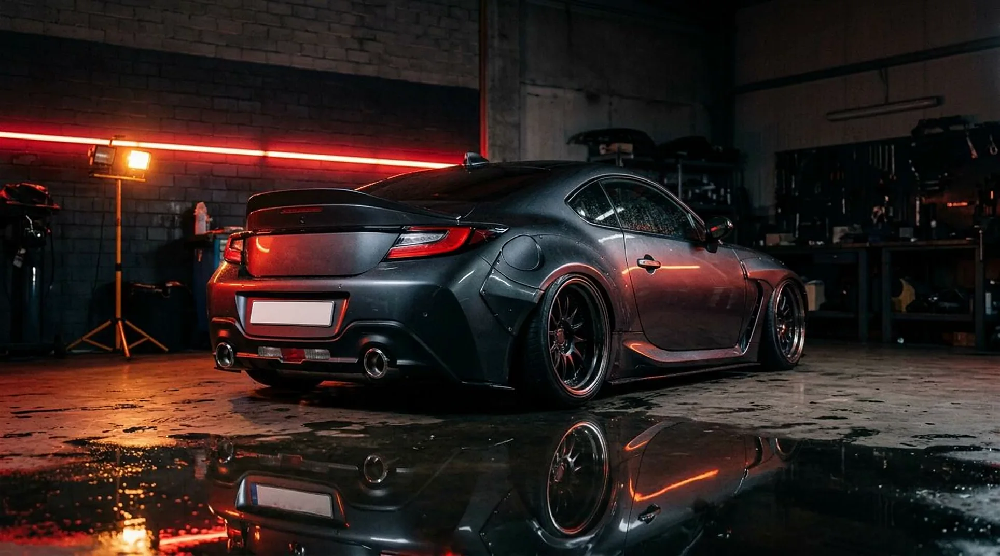
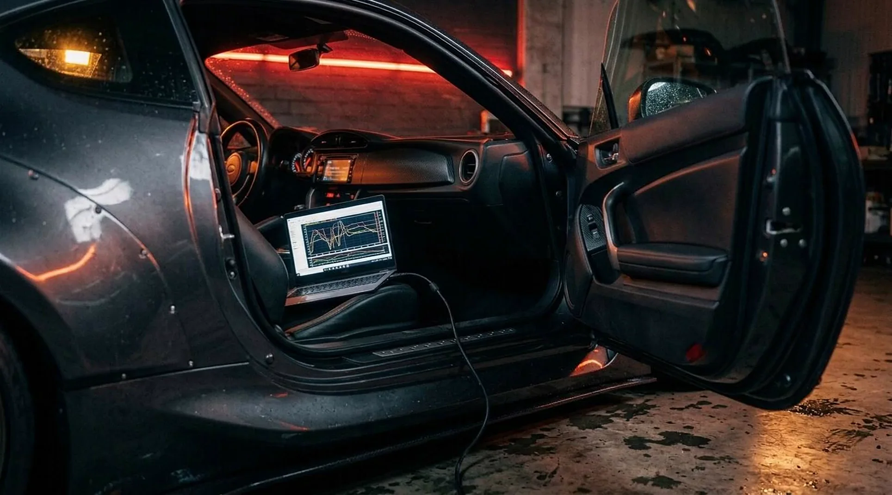
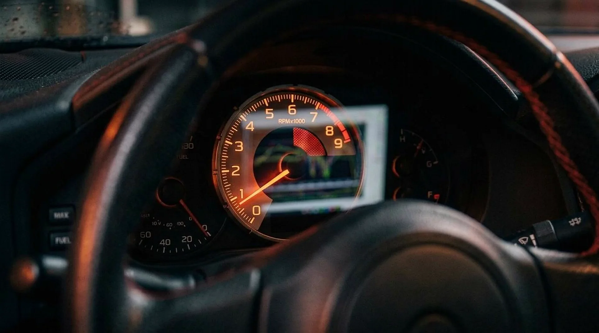
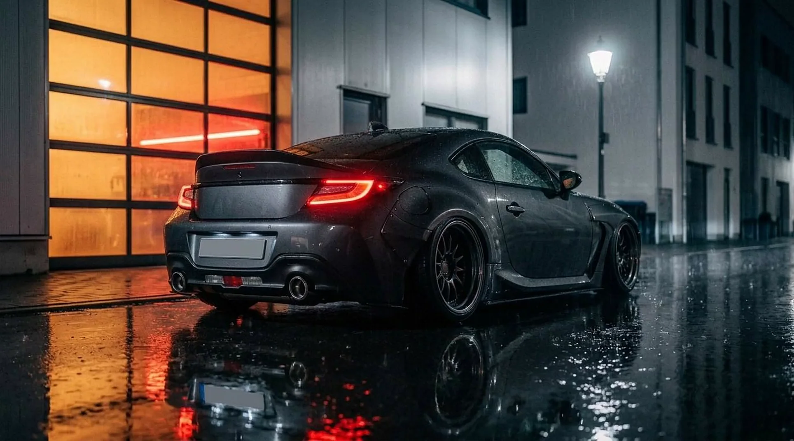
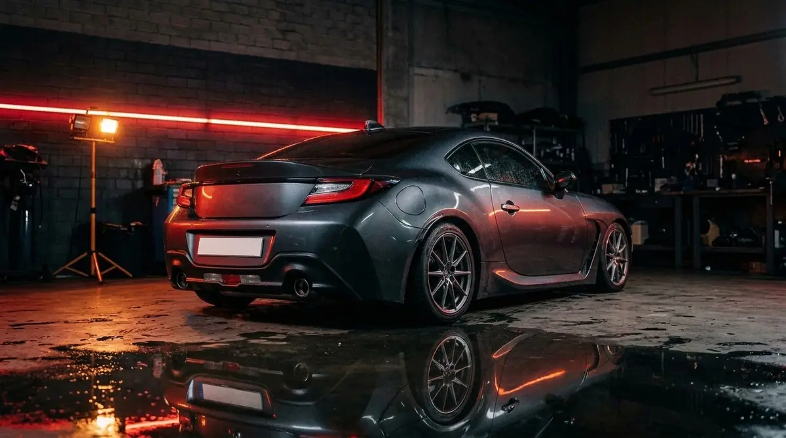

SiRAC ELEKTRONiK · Braunschweig · Chiptuning for more horsepower
Chiptuning und Software-Optimierung, Fehlerdiagnose, Steuergeräte und Schlüssel: Kfz-Elektronik in Braunschweig. Per WhatsApp anfragen, Fahrzeug kurz beschreiben, werktags Rückmeldung.
Chiptuning, Diagnose, Steuergeräte, Schlüssel: Kfz-Elektronik in Braunschweig. Anfrage per WhatsApp, Rückmeldung werktags.
Wir sind eine Werkstatt aus Braunschweig, die erst liest und dann schreibt: Steuergeräte auslesen, Fehler finden, Software auf dein Fahrzeug abstimmen. Für alle Fabrikate, vom Alltagsauto bis zum Exoten. Erst die Diagnose, dann die Leistung.




Zieh den Regler nach rechts. Dasselbe Auto, mehr Leistung.

Beispielwerte, je nach Fahrzeug. Was bei deinem möglich ist, sagen wir dir nach der Diagnose.
Chiptuning for more horsepower. Erst die Diagnose, dann die Arbeit. Alles andere auf Anfrage.
„Sehr zuverlässig, pünktlich und fachgerechte Arbeit. Klare Empfehlung.“Google-Bewertung
„Hat bei meinem Mercedes den Elektronikfehler lokalisiert, den andere Werkstätten nicht finden konnten.“Google-Bewertung
Mit ein paar Angaben und einem Foto können wir sofort einschätzen, ob und wann wir helfen können. Rückmeldung werktags.
0163 153 0455
gern mit Fotos
Broitzemer Str. 202/Halle 40, 38118 Braunschweig
In Google Maps öffnen